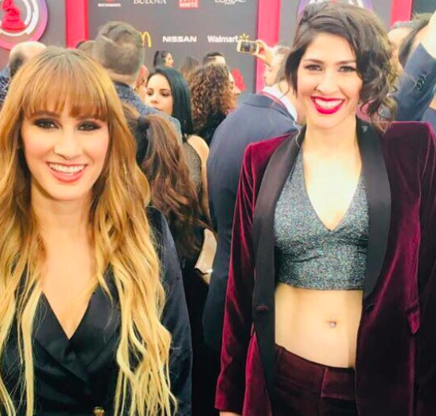

HA ASH
En diciembre del 2007 se suman a labores benéficas al lanzar el Fondo Ha*Ash, el cual apoya a niños que padecen VIH/SIDA e inmigrantes, entre otras causas, la cual la dan a conocer a través de un concierto de beneficencia en el Teatro Metropolitan, para esto crearon «Hoy rezaremos por ti» una canción inédita la cual interpretaron en conjunto con un coro de niños beneficiados por dicha fundación y a partir de entonces sería el himno que la identificaría.
En 2010, Hanna y Ashley fueron nombradas embajadoras de la fundación Save The Children.136 Ese mismo año grabaron el tema "Latente" para plasmar las experiencias vividas en la visita que las hermanas realizaron a Haití en agosto de ese año, luego del terremoto que azotó a ese país, y cuyas ganancias serán donadas a los niños de Haití a través de dicha fundación.
Han participado de forma activa desde 2010, colaborando con el proyecto de #NiñezMigrante en Chiapas y Puebla, además de apoyar la respuesta humanitaria de Save the Children luego de los sismos de septiembre de 2017 en México.
En 2016 a través del Fondo Ha*Ash, donde destinan ayuda a diferente causas cada año, realizaron el proyecto "Barriga llena, corazón contento", donde llevaban de comer a personas en situación de calle, para ello lanzaron una convocatoria a sus compañeros del programa "Me pongo de pie" y a sus seguidores para que también realicen esta noble causa.139 Fueron reconocidas como "Agentes de Cambio" en los KCA México, por ésta labor social.
Las cantantes también brindan apoyo a través del mismo fondo a niños y jóvenes que padecen de síndrome de Down.
El 7 de diciembre de 2018 Ha*Ash se presentó en el Coliseo Centenario de Torreón como parte de su gira, para fomentar una causa benéfica. Lo recaudado por los accesos del show se donó a la asociación “Sonríe… Solo tienes cáncer”, la cual apoya a la prevención y tratamientos de este padecimiento.
Hanna y Ashley frecuentemente visitan a niños que padecen enfermedades por pedidos que ellos les hacen a través de las redes sociales y que sus seguidores les hacen llegar,144 con los cuales conviven interpretándoles canciones y regalándoles obsequios,145146 siendo el caso más conocido cuando el dúo viajo a Torreón para cumplir el sueño de Paola una chica que padecía leucemia y que quería conocerlas,147 quien falleció días después de la visita de las hermanas.